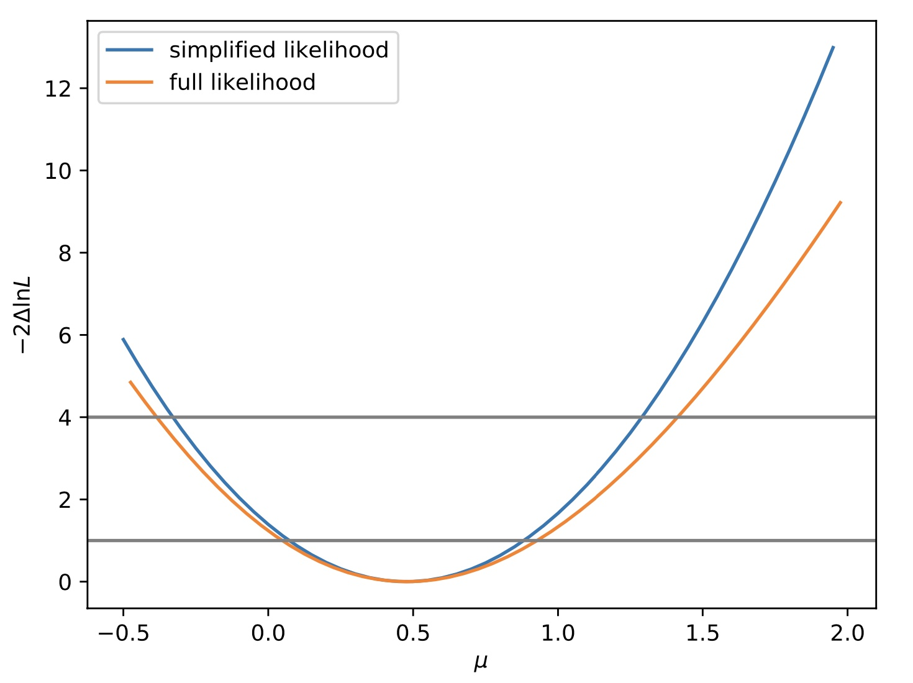

Procedure for creating and validating simplified likelihood inputs
This page is to give a brief outline for the creation of (potentially aggregated) predictions and their covariance to facilitate external reinterpretation using the simplified likelihood (SL) approach. Instructions for validating the simplified likelihood method (detailed in the CMS note here and "The Simplified Likelihood Framework" paper) are also given.
Requirements
You need an up to date version of Combine. Note You should use the latest release of Combine for the exact commands on this page. You should be using Combine tag v9.0.0 or higher or the latest version of the 112x branch to follow these instructions.
You will find the python scripts needed to convert Combine outputs into simplified likelihood inputs under test/simplifiedLikelihood
If you're using the 102x branch (not recommended), then you can obtain these scripts from here by running:
curl -s https://raw.githubusercontent.com/nucleosynthesis/work-tools/master/sparse-checkout-SL-ssh.sh > checkoutSL.sh
bash checkoutSL.sh
ls work-tools/stats-tools
If you also want to validate your inputs and perform fits/scans using them, you can use the package SLtools from The Simplified Likelihood Framework paper for this.
git clone https://gitlab.cern.ch/SimplifiedLikelihood/SLtools.git
Producing covariance for recasting
Producing the necessary predictions and covariance for recasting varies depending on whether or not control regions are explicitly included in the datacard when running fits. Instructions for cases where the control regions are and are not included are detailed below.
Warning
The instructions below will calculate moments based on the assumption that \(E[x]=\hat{x}\), i.e it will use the maximum likelihood estimators for the yields as the expectation values. If instead you want to use the full definition of the moments, you can run the FitDiagnostics method with the -t option and include --savePredictionsPerToy and remove the other options, which will produce a tree of the toys in the output from which moments can be calculated.
Type A - Control regions included in datacard
For an example datacard 'datacard.txt' including two signal channels 'Signal1' and 'Signal2', make the workspace including the masking flags
text2workspace.py --channel-masks --X-allow-no-signal --X-allow-no-background datacard.txt -o datacard.root
Run the fit making the covariance (output saved as fitDiagnostics.root) masking the signal channels. Note that all signal channels must be masked!
combine datacard.root -M FitDiagnostics --saveShapes --saveWithUnc --numToysForShape 2000 --setParameters mask_Signal1=1,mask_Signal2=1 --saveOverall -N Name
Outputs, including predictions and covariance, will be saved in fitDiagnosticsName.root folder shapes_fit_b
Type B - Control regions not included in datacard
For an example datacard 'datacard.txt' including two signal channels 'Signal1' and 'Signal2', make the workspace
text2workspace.py --X-allow-no-signal --X-allow-no-background datacard.txt -o datacard.root
Run the fit making the covariance (output saved as fitDiagnosticsName.root) setting no pre-fit signal contribution. Note we must set --preFitValue 0 in this case since, we will be using the pre-fit uncertainties for the covariance calculation and we do not want to include the uncertainties on the signal.
combine datacard.root -M FitDiagnostics --saveShapes --saveWithUnc --numToysForShape 2000 --saveOverall --preFitValue 0 -n Name
Outputs, including predictions and covariance, will be saved in fitDiagnosticsName.root folder shapes_prefit
In order to also extract the signal yields corresponding to r=1 (in case you want to run the validation step later), you also need to produce a second file with the pre-fit value set to 1. For this you do not need to run many toys. To save time you can set --numToysForShape to a low value.
combine datacard.root -M FitDiagnostics --saveShapes --saveWithUnc --numToysForShape 1 --saveOverall --preFitValue 1 -n Name2
You should check that the order of the bins in the covariance matrix is as expected.
Produce simplified likelihood inputs
Head over to the test/simplifiedLikelihoods directory inside your Combine area. The following instructions depend on whether you are aggregating or not aggregating your signal regions. Choose the instructions for your case.
Not Aggregating
Run the makeLHInputs.py script to prepare the inputs for the simplified likelihood. The filter flag can be used to select only signal regions based on the channel names. To include all channels do not include the filter flag.
The SL input must NOT include any control regions that were not masked in the fit.
If your analysis is Type B (i.e everything in the datacard is a signal region), then you can just run
python makeLHInputs.py -i fitDiagnosticsName.root -o SLinput.root
If necessary (i.e as in Type B analyses) you may also need to run the same on the output of the run where the pre-fit value was set to 1.
python makeLHInputs.py -i fitDiagnosticsName2.root -o SLinput2.root
If you instead have a Type A analysis (some of the regions are control regions that were used to fit but not masked) then you should add the option --filter SignalName where SignalName is some string that defines the signal regions in your datacards (for example, "SR" is a common name for these).
Note: If your signal regions cannot be easily identified by a string, follow the instructions below for aggregating, but define only one channel for each aggregate region. This will maintain the full information and will not actually aggregate any regions.
Aggregating
If aggregating based on covariance, edit the config file aggregateCFG.py to define aggregate regions based on channel names. Note that wildcards are supported. You can then make likelihood inputs using
python makeLHInputs.py -i fitDiagnosticsName.root -o SLinput.root --config aggregateCFG.py
At this point you have the inputs as ROOT files necessary to publish and run the simplified likelihood.
Validating the simplified likelihood approach
The simplified likelihood relies on several assumptions (detailed in the documentation at the top). To test the validity for your analysis, statistical results between Combine and the simplified likelihood can be compared.
We will use the package SLtools from the Simplified Likelihood Paper for this. The first step is to convert the ROOT files into python configs to run in the tool.
Convert ROOT to Python
If you followed the steps above, you have all of the histograms already necessary to generate the python configs. The script test/simplifiedLikelihoods/convertSLRootToPython.py can be used to do the conversion. Just provide the following options when running with python.
-O/--outname: The output python file containing the model (default istest.py)-s/--signal: The signal histogram, should be of formatfile.root:location/to/histogram-b/--background: The background histogram, should be of formatfile.root:location/to/histogram-d/--data: The data TGraph, should be of formatfile.root:location/to/graph-c/--covariance: The covariance TH2 histogram, should be of formatfile.root:location/to/histogram
For example, to get the correct output from a Type B analysis with no aggregating, you can run
python test/simplifiedLikelihoods/convertSLRootToPython.py -O mymodel.py -s SLinput.root:shapes_prefit/total_signal -b SLinput.root:shapes_prefit/total_M2 d -d SLinput.root:shapes_prefit/total_data -c SLinput.root:shapes_prefit/total_M2
The output will be a python file with the right format for the SL tool. You can mix different ROOT files for these inputs. Note that the SLtools package also has some tools to covert .yaml-based inputs into the python config for you.
Run a likelihood scan with the SL
If you have checked out the SLtools, you can create a simple python script as the one below to produce a scan of the simplified likelihood from your inputs.
#! /usr/bin/env python
import simplike as sl
exec(open("mymodel.py").read())
slp1 = sl.SLParams(background, covariance, obs=data, sig=signal)
import numpy as np
npoints = 50
mus = np.arange(-0.5, 2, (2+0.5)/npoints)
tmus1 = [slp1.tmu(mu) for mu in mus]
from matplotlib import pyplot as plt
plt.plot(mus,tmus1)
plt.show()
Where the mymodel.py config is a simple python file defined as;
data: A python array of observed data, one entry per bin.background: A python array of expected background, one entry per bin.covariance: A python array of the covariance between expected backgrounds. The format is a flat array which is converted into a 2D array inside the toolsignal: A python array of the expected signal, one entry per bin. This should be replaced with whichever signal model you are testing.
This model.py can also just be the output of the previous section converted from the ROOT files for you.
The example below is from the note CMS-NOTE-2017-001
Show example
import numpy
import array
name = "CMS-NOTE-2017-001 dummy model"
nbins = 8
data = array.array('d',[1964,877,354,182,82,36,15,11])
background = array.array('d',[2006.4,836.4,350.,147.1,62.0,26.2,11.1,4.7])
signal = array.array('d',[47,29.4,21.1,14.3,9.4,7.1,4.7,4.3])
covariance = array.array('d', [ 18774.2, -2866.97, -5807.3, -4460.52, -2777.25, -1572.97, -846.653, -442.531, -2866.97, 496.273, 900.195, 667.591, 403.92, 222.614, 116.779, 59.5958, -5807.3, 900.195, 1799.56, 1376.77, 854.448, 482.435, 258.92, 134.975, -4460.52, 667.591, 1376.77, 1063.03, 664.527, 377.714, 203.967, 106.926, -2777.25, 403.92, 854.448, 664.527, 417.837, 238.76, 129.55, 68.2075, -1572.97, 222.614, 482.435, 377.714, 238.76, 137.151, 74.7665, 39.5247, -846.653, 116.779, 258.92, 203.967, 129.55, 74.7665, 40.9423, 21.7285, -442.531, 59.5958, 134.975, 106.926, 68.2075, 39.5247, 21.7285, 11.5732])
Example using tutorial datacard
For this example, we will use the tutorial datacard data/tutorials/longexercise/datacard_part3.txt. This datacard is of Type B since there are no control regions (all regions are signal regions).
First, we will create the binary file (run text2workspace)
text2workspace.py --X-allow-no-signal --X-allow-no-background data/tutorials/longexercise/datacard_part3.txt -m 200
And next, we will generate the covariance between the bins of the background model.
combine data/tutorials/longexercise/datacard_part3.root -M FitDiagnostics --saveShapes --saveWithUnc --numToysForShape 10000 --saveOverall --preFitValue 0 -n SimpleTH1 -m 200
combine data/tutorials/longexercise/datacard_part3.root -M FitDiagnostics --saveShapes --saveWithUnc --numToysForShape 1 --saveOverall --preFitValue 1 -n SimpleTH1_Signal1 -m 200
combine -M MultiDimFit data/tutorials/longexercise/datacard_part3.root --rMin -0.5 --rMax 2 --algo grid -n SimpleTH1 -m 200
Next, since we do not plan to aggregate any of the bins, we will follow the instructions for this and pick out the right covariance matrix.
python test/simplifiedLikelihoods/makeLHInputs.py -i fitDiagnosticsSimpleTH1.root -o SLinput.root
python test/simplifiedLikelihoods/makeLHInputs.py -i fitDiagnosticsSimpleTH1_Signal1.root -o SLinput_Signal1.root
We now have everything we need to provide the simplified likelihood inputs:
$ root -l SLinput.root
root [0] .ls
Attaching file SLinput.root as _file0...
(TFile *) 0x3667820
root [1] .ls
TFile** SLinput.root
TFile* SLinput.root
KEY: TDirectoryFile shapes_fit_b;1 shapes_fit_b
KEY: TDirectoryFile shapes_prefit;1 shapes_prefit
KEY: TDirectoryFile shapes_fit_s;1 shapes_fit_s
We can convert this to a python module that we can use to run a scan with the SLtools package. Note, since we have a Type B datacard, we will be using the pre-fit covariance matrix. Also, this means we want to take the signal from the file where the prefit value of r was 1.
python test/simplifiedLikelihoods/convertSLRootToPython.py -O mymodel.py -s SLinput_Signal1.root:shapes_prefit/total_signal -b SLinput.root:shapes_prefit/total_M1-d SLinput.root:shapes_prefit/total_data -c SLinput.root:shapes_prefit/total_M2
We can compare the profiled likelihood scans from our simplified likelihood (using the python file we just created) and from the full likelihood (that we created with Combine.). For the former, we need to first checkout the SLtools package
git clone https://gitlab.cern.ch/SimplifiedLikelihood/SLtools.git
mv higgsCombineSimpleTH1.MultiDimFit.mH200.root SLtools/
mv mymodel.py SLtools/
cd SLtools
The script below will create a plot of the comparison for us.
#! /usr/bin/env python
import simplike as sl
exec(open("mymodel.py").read())
slp1 = sl.SLParams(background, covariance, obs=data, sig=signal)
import ROOT
fi = ROOT.TFile.Open("higgsCombineSimpleTH1.MultiDimFit.mH200.root")
tr = fi.Get("limit")
points = []
for i in range(tr.GetEntries()):
tr.GetEntry(i)
points.append([tr.r,2*tr.deltaNLL])
points.sort()
mus2=[pt[0] for pt in points]
tmus2=[pt[1] for pt in points]
import numpy as np
npoints = 50
mus1 = np.arange(-0.5, 2, (2+0.5)/npoints)
tmus1 = [slp1.tmu(mu) for mu in mus1]
from matplotlib import pyplot as plt
plt.plot(mus1,tmus1,label='simplified likelihood')
plt.plot(mus2,tmus2,label='full likelihood')
plt.legend()
plt.xlabel("$\mu$")
plt.ylabel("$-2\Delta \ln L$")
plt.savefig("compareLH.pdf")

It is also possible to include the third moment of each bin to improve the precision of the simplified likelihood [ JHEP 64 2019 ]. The necessary information is stored in the outputs from Combine, therefore you just need to include the option -t SLinput.root:shapes_prefit/total_M3 in the options list for convertSLRootToPython.py to include this in the model file. The third moment information can be included in SLtools by using sl.SLParams(background, covariance, third_moment, obs=data, sig=signal)